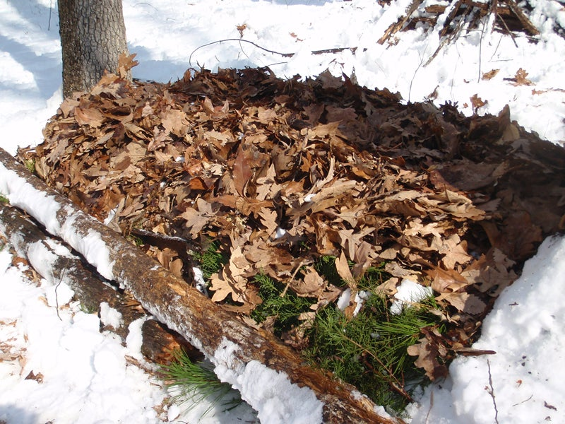

This is not a shelter by itself, but it makes an outstanding addition to any other shelter type. To make a bough bed, you can use leaves, grass, evergreen boughs, or other plant material. Cedar and pine boughs are common enough in many places, but fir boughs make the softest bed. For the bed frame, roll up two logs, side by side and about 3 feet apart. Make sure they are longer than you are tall. Fill the void between the logs by laying down the boughs, several at a time. Dead, dry leaves or dead grasses can be a great addition if you have them. In snowy conditions, you’ll just have to stick with the boughs. Make the mattress so thick that you are at least 6 inches from the frozen ground or snow surface when lying down. Keep adding armloads of boughs or other vegetation if the mattress compresses too much or isn’t warm enough.